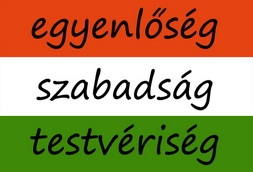
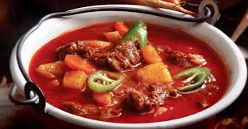
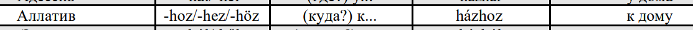

Венгерский язык /
Венгр чĕлхи
Чебоксары/Шупашкар, 24.10.2021
Дэн Патин, dpat.inПривет! Салам! Sziasztok!
Кто я такой?
- Дэн Па́тин / Den Patin
- telegram/instagram/vk/twitter: @denpatin
- Череповец ↣ Петербург
- программист* / лингвист* / преподаватель*
|
NB: Дисклеймер
Отказываюсь от ответственности за то, что вы можете захотеть изучать венгерский язык, а пути назад нет...Раздаточные материалы
https://dpat.in/langfest/handouts/cheboksary21-hungarian.pdf
Поехали! Пуçлатпӑр-и? Kezdjük!
Вы уже немного знаете венгерский!
Чӑвашла калаçатӑр-и? /
Говорите по-чувашски?
szél ⇠ çил
tükör ⇠ тӗкӗр
borjú ⇠ пăру
sarló ⇠ çурла
térd ⇠ чĕр
szőlő ⇠ çырла
bölcső ⇠ пелче
Говорите по-русски? /
Вырӑсла калаçатӑр-и?
káposzta ⇠ капуста
medve ⇠ медведь
széna ⇠ сено
drága ⇠ дорогой
málna ⇠ малина
sétál ⇠ гулять
csütörtök ⇠ четверг
Венгерский, подай голос!
Történt nemrégiben,
hogy a Nagy Játékmester
meghívott engem magához.
Kettesben voltunk csak,
és a játékunk szabálya is
roppant egyszerű volt:
Ő elvette valamimet,
aztán feltette a kérdést,
hogy “Vagy-e még?”,
és nekem válaszolni kellett.
Először elvette a lábamat.
“Vagy-e még?”
“Vagyok.”
Звучит космически? 😏
magyar | gulyás |
[мадья́р] и [гуля́ш]
А как читать-то тогда?
Гласные /
Уçă сасăсем /
Magánhangzók
a e i o u ö ü
+ ◌́ =
á é í ó ú ő ű
a /ɒ/ ~ á /a:/
e /ɛ/ ~ é /e:/
a/á
hatvanhat asztalra
százhárom átszállássá
igazságszolgáltatás
e/é
emeletes terem
négy fényképésznél
hét levélszekrényben
Согласные /
Хупă сасăсем /
Mássalhangzók
b c d f g h k l m n p r t v z
s sz cs zs dz dzs
ny ty ly gy
s /ʃ/
sz /s/
cs /ʧ/
zs /ʒ/
y ~ мягкий знак
ny ~ [нь]
ty ~ [ть]
ly /j/
gy /ɟ/
magyar
/'mɒɟɒr/
gulyás
/'guja:ʃ/
Ещё немного практики?
- Oroszország
- Csuvas Köztársaság / Csuvasföld
- Csebokszári
- huszonötödik csebokszári nyelvi fesztivál
Грамматика на закуску?
0. Артикли /
Артикльсем /
Névelők
egy
egy ház «(какой-то) дом»
a или az
a hernyó «гусеница»
az uborka «огурец»
ez «этот», az «тот»
ez a padló «этот пол»
az az úr «тот господин»
azaz az az “az”
«то есть тот (артикль) “az”»
1. Падежи / Ӳкĕмсем / Esetek
Их 25 😉
падеж в венгерском
=
предлог + падеж в русском
до́м → в до́ме
ház → házban
са́д → в саду́
kert → kertben
2. Сингармонизм /
Уçă сасăсен килĕшĕвĕ /
Magánhangzó-harmónia
Уподобляем гласные внутри слова по фонетическим признакам.
Задний ряд: a á o ó u ú
Передний ряд: e é i í ö ő ü ű
Огубленные: ö ő ü ű
*Нейтральные: e é i í
Пример:
«К кому/чему?»
- barát → baráthoz
- testvér → testvérhez
- föld → földhöz
- papír → papírhoz
НО
föld
földben, földön, földhöz, földet
köd
ködben, ködön, ködhöz, ködöt
kör
körben, körön, körhöz, kört
híd
hidat, hidam, hídra
hír
hírt, hírem, hírre
mű
művet, művem
ló
lovat, lovam, lóhoz
mű
művet, művem
nő
nőt, nőm
3. Агглютинативность / Toldalékolás
«Преклеивание» к корню аффиксов, каждый из которых несёт одно значение.
meg-szent-ség-telen-ít-het-etlen-ség-es-ked-és-e-tek-ért
4. Глаголы / Глаголсем / Igék
быть
(én) tanár vagyok
(te) tanár vagy
ő tanár van
(mi) tanárok vagyunk
(ti) tanárok vagytok
ők tanárok vannak
István nem tanuló.
István volt tanuló.
István itt van.
A fesztiválunkon van István.
Nem ... van itt István!?
Nincs itt István!
Istvánnál van egy könyv.
Istvánnak van egy könyve.
Van könyvem.
5. Притяжательность /
Камăнлăх
Birtoklás
ország
országom, országod, országa,
országunk, országotok, országuk
országok
országaim, országaid, országai,
országaink, országaitok, országaik
Az én országom!
könyv
barát
книга друга
barát könyve
друг книга-его
az a barát
az a barát könyve
annak a barátnak a könyve
barát könyve
István
István barátja
István ⇦ barát ⇦ könyv
István barátjának a könyve
kutyának a lába
Istvánnak a kutyájának a lába
(лирическое отступление)
láb «ноги, лапы»
hátsó láb «задние лапы»
bal láb «левая нога»
féllábú
fül «уши», szem «глаза», fog «зубы»
a barátom lakása
A barátom lakásában vagyok.
6. Снова глаголы /
Каллех глаголсем /
Még egyszer igék
Три факта, которые вам (надо ли?) знать
1. Есть приставки 🤷🏼♂️
и они отделяются 🤔
но не как в немецком 😱
belép
be- + lép
Belépek a házba.
Ne lépj be a házba!
kimegy
Lesz kedvem kimenni a térre?
viszontlát
Viszontlátásra!
felszáll
Szállj fel magasra...